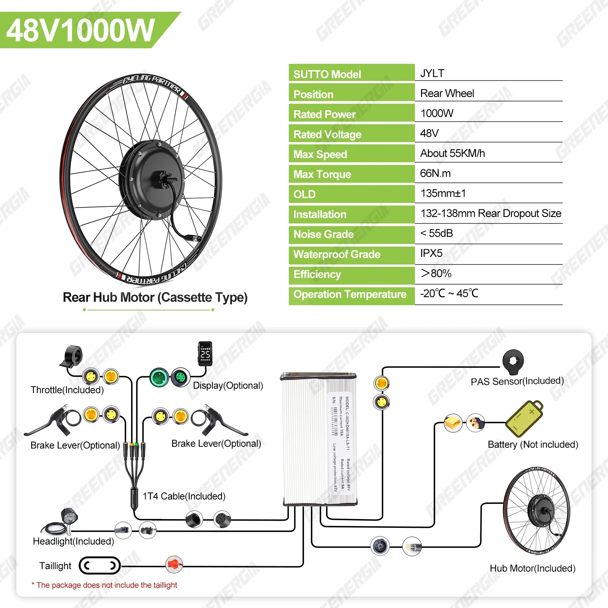
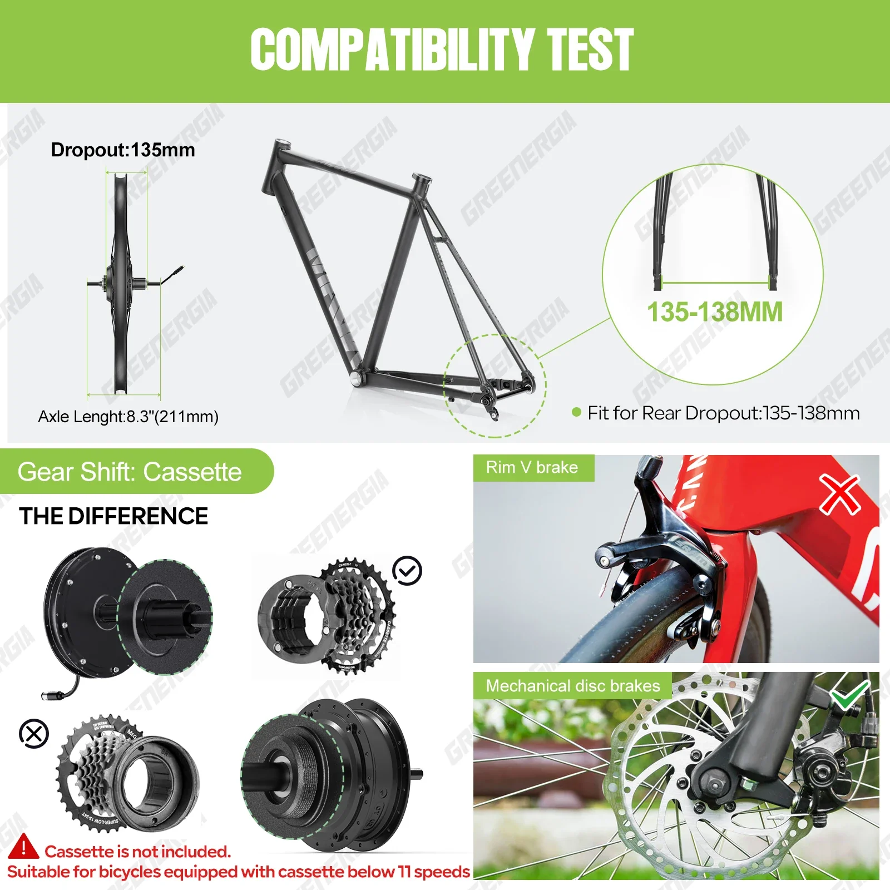
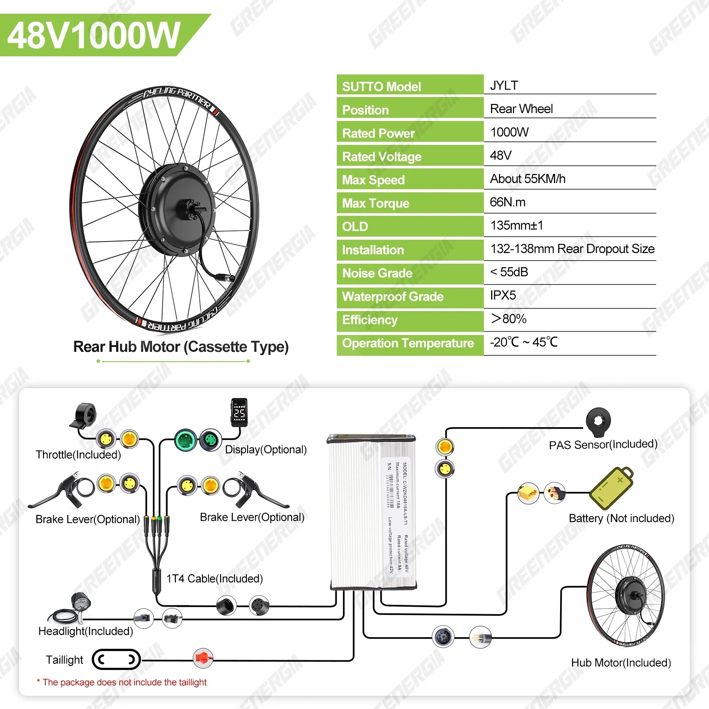
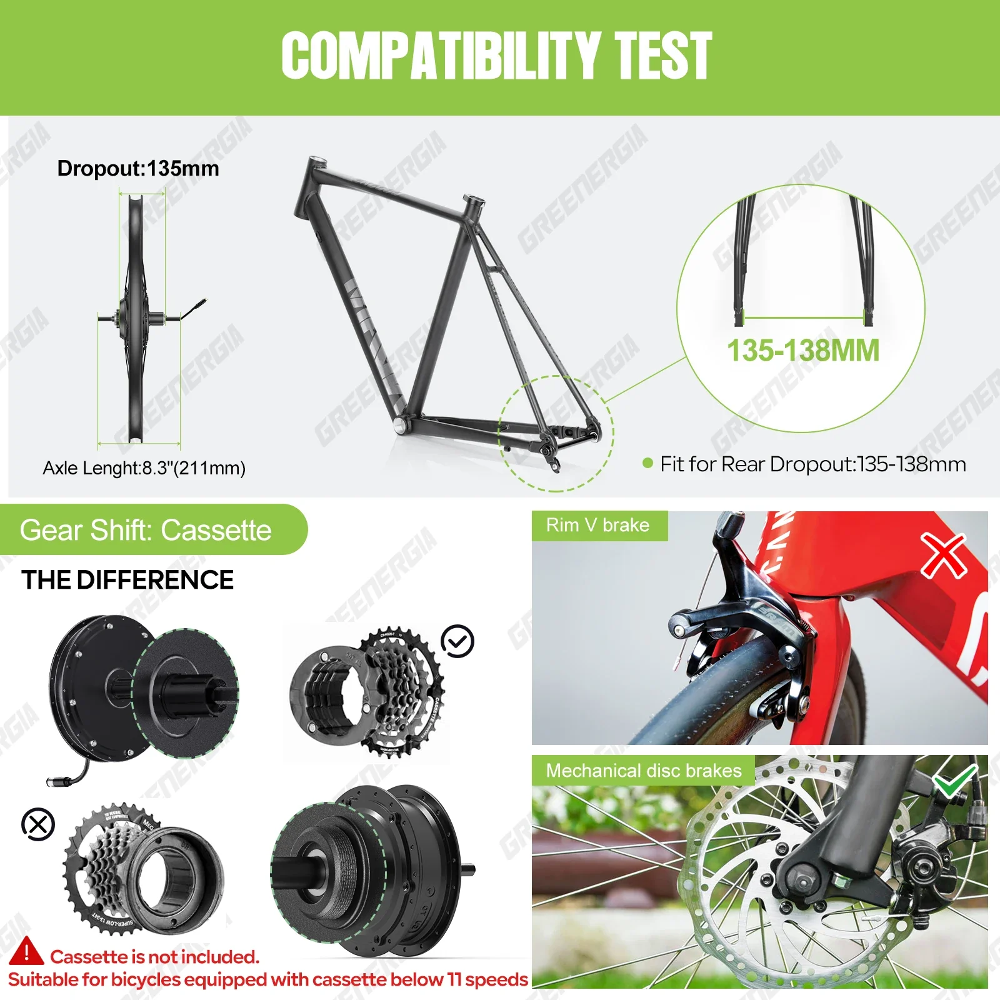

BAFANG Varstrom 1000W silnik piasty koła 48V zestaw do konwersji roweru elektrycznego bez przekładni i bezszczotkowego silnika tylnego z napędem 26-29 cali 700C
Przekształć swój rower w mocną maszynę elektryczną dzięki zestawowi konwersji koła z silnikiem piasty Varstrom o mocy 1000 W. Zaprojektowany dla rowerzystów poszukujących ekscytującej wydajności i płynnej integracji, zestaw ten wyposażony jest w solidny, bezprzekładniowy silnik bezszczotkowy, który zapewnia płynne przyspieszenie i płynne dostarczanie mocy.
Zestaw konwersji Varstrom, kompatybilny z kołami 26-29 cali i 700C, nadaje się do różnych typów rowerów. Jego mocny silnik o mocy 1000 W bez trudu pokonuje wzniesienia i pozwala na jazdę z imponującą prędkością, dzięki czemu codzienne dojazdy do pracy lub weekendowe przygody stają się przyjemniejsze.
- Silnik bezszczotkowy w piaście o mocy 1000 W: Doświadcz niezrównanej mocy i wydajności dzięki bezprzekładniowemu silnikowi bezszczotkowemu, znanemu z płynnej pracy i niskich wymagań konserwacyjnych.
- Napięcie systemu 48 V:
- Konstrukcja tylnego koła napędowego: Zapewnia optymalne rozłożenie ciężaru i naturalne wrażenia z jazdy.
- Kompatybilność: Pasuje do kół o średnicy 26-29 cali i 700C, oferując wszechstronność dla różnych modeli rowerów.
Poczuj wolność jazdy na rowerze elektrycznym dzięki zestawowi konwersyjnemu Varstrom. Ciesz się ekscytującym i ekologicznym sposobem na codzienne podróże i odkrywanie nowych horyzontów.
Silnik piasty Varstrom 1000 W to mocny i wydajny zestaw do konwersji roweru na rower elektryczny. Wyposażony w solidny, bezprzekładniowy silnik bezszczotkowy, zestaw zapewnia płynną i cichą pracę, a jednocześnie imponujący moment obrotowy, umożliwiający bezproblemowe pokonywanie wzniesień i przyspieszanie.
- Silnik bezszczotkowy bezprzekładniowy 1000 W: Zapewnia wyjątkową moc i moment obrotowy, umożliwiając efektywne pokonywanie wzniesień i dynamiczne przyspieszanie.
- Napięcie systemu 48 V: Zapewnia wysoką wydajność i możliwość jazdy na długich dystansach.
- Konfiguracja tylnego napędu: Zapewnia naturalne i intuicyjne wrażenia z jazdy, dzięki płynnemu zintegrowaniu silnika z tylnym kołem.
- Kompatybilność z kołami 26"-29" (700C): Pasuje do szerokiej gamy ram i rozmiarów rowerów.
Ten mocny zestaw do konwersji roweru elektrycznego został stworzony, aby zapewnić wyjątkową wydajność. Poniższe dane techniczne podkreślają jego najważniejsze cechy:
- Typ silnika: bezszczotkowy silnik w piaście bez przekładni
- Moc wyjściowa: 1000 W
- Napięcie systemu: 48 V
- Kompatybilność z rozmiarami kół: 26"–29" (700°C)
- Typ napędu: napęd na tylne koła
Odmień swoje codzienne dojazdy do pracy, weekendowe przygody lub rekreacyjne przejażdżki dzięki silnikowi w piaście Varstrom o mocy 1000 W. Ten zestaw konwersyjny oferuje liczne korzyści:
- Łatwe podjazdy:** Pokonuj wzniesienia z łatwością dzięki mocnemu silnikowi o mocy 1000 W.
- Zwiększony zasięg i wydajność: Ciesz się dłuższymi przejażdżkami i mniejszym zmęczeniem dzięki wspomaganiu elektrycznemu.
- Mniejszy ślad węglowy: Wybierz bardziej zrównoważony środek transportu.
- Ekonomiczna konwersja: Zmień swój rower w rower elektryczny bez konieczności kupowania nowego.
Motor w piaście Varstrom 1000 W został zaprojektowany z myślą o prostej instalacji i przyjaznej obsłudze. Postępuj zgodnie z dołączoną instrukcją, aby bezproblemowo zintegrować silnik z ramą roweru. Zestaw zazwyczaj zawiera wszystkie niezbędne elementy, takie jak wiązki przewodów, kontrolery i mechanizmy przepustnicy.
Dostosuj swoje wrażenia z jazdy, regulując poziom wspomagania elektrycznego. Wybierz spośród wielu ustawień mocy, aby dopasować je do pożądanej prędkości i poziomu wysiłku.